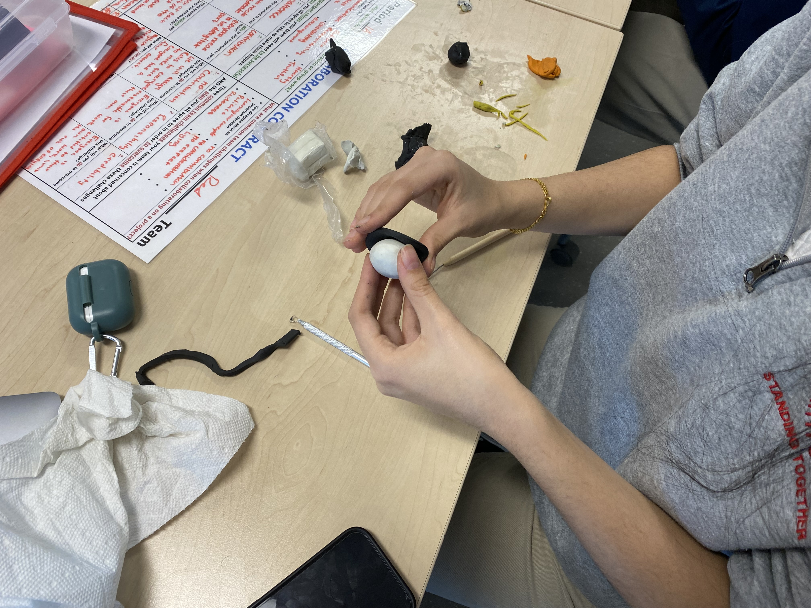

This website is entirely dedicated to my group and I's stop motion animation, where we take on the likes of Biased Media and show how it can affect one's judgement on the topic. Keep reading to find our process, the general meaning behind this project, and some funny behind the scene images.
So before we get started, what exactly is Biased Media? Biased media is when you look solely at one place for your valuable information, whether it be online at a news page, or still reading the daily newspaper. Only looking from the persepctives of these news sources, your understanding and the overall concept of the news get tainted, remember, there are multiple sides to every story!
Biased Media plays the most important role in our film because we follow along as our main character found himself solely looking at information he found on his computer, we found that he was starting to have a specific preference for that news only. We then cut scenes to other penguins doing the same thing, until ultimately they get into an argument, and nothing can be resolved over pointless yelling can it?
Now for our actual project:
Overall this production and film took around 4 hours to start and finish, granted we were off task a bit of times, however we finished our project nonetheless. We first started off by creating our clay made friends, that took a while however they came out good.
The meaning of our film is just to show our audience that sticking to only one news media source is not good, it't not beneficial and it restricts you from having the full range of motion in your knowledge, with one media source. With multiple media sources it opens your eyes to what's truly going on in that specific story. So if there's anything you can take from this video, please learn to broaden your horizons and search elsewhere for your information, don't rely on one news source, open multiple. Thank you.